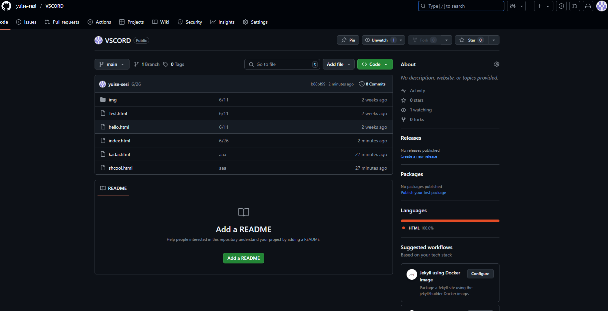

仙台育英学園が沖縄にやってきた
「私達の学校」について
仙台育英学園沖縄高等学校は令和4年度に開校したばかりの新しい学校です。
学び方を学ぶという考え方のもと、ICTやアントレプレナーシップ教育に力を入れています。
リサイズ後：
文字の色や大きさを3つ以上変更した文章を追加してください。
内容は学校生活に関することであれば何でも構いません。
朝のホームルームでは、クラス全員で予定を確認したり、
連絡事項を共有したりします。
体育の時間には、バスで移動して外で思いっきり体を動かしてリフレッシュできます！
昼休みは、友達との会話や、図書室での読書など、思い思いの時間を過ごしています。
GitHubを使った監理ができているかをこのページ上に示してください。
